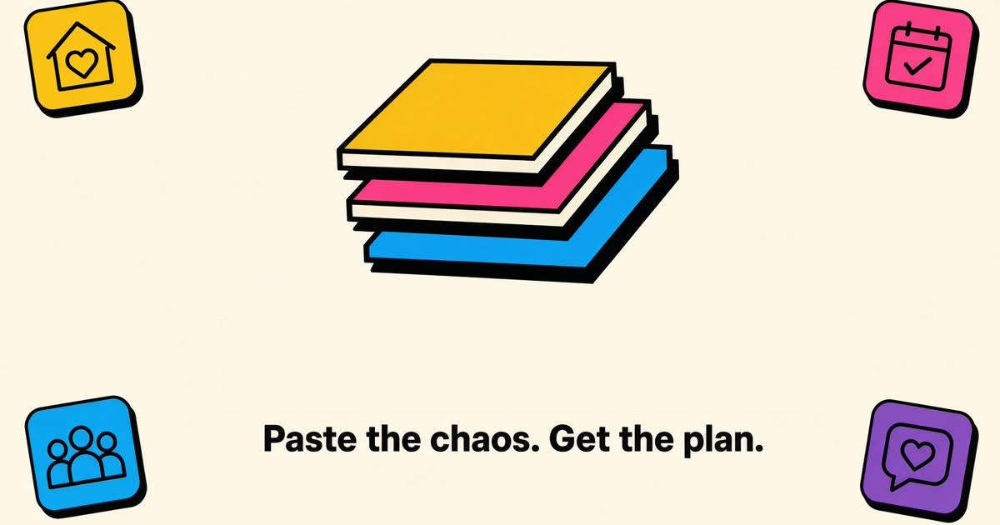

The problem
School life arrives as a mess of emails, WhatsApp threads and newsletters. Deadlines, permission slips and events get missed because nothing turns that stream into a single list.
What I built
Paste any of those sources and Scoop uses AI tool-calling — not chat — to pull events, deadlines, tasks and RSVPs into one editable list. It has Today/This-Week filters, calendar export, and Google Calendar/Tasks sync.
Key decisions
- Chose tool-calling over a chat interface — the job is structured extraction, not conversation.
- Built the whole flow in one stack so the path from raw text to a calendar-ready event stays predictable end to end.
Result
Silver Award (2nd Place) at the CSC Back-to-School Hackathon, and selected for the Hackyard Build 2026 in-person round at IIT Guwahati from thousands of applicants.